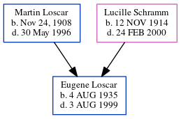

Eugene Louis Loscar 1935 - 1999
[ Home ] | [ Calendar ] | [ Surnames Index ] | [ Census Index ] | [ Family History ]The child of Martin Loscar and Lucille Schramm, Eugene Loscar, the first cousin once-removed on the mother's side of Michele Copp (née Phillips), was born in Pennsylvania on Aug 4, 19351,2.
During his life, he was living in Pittsburgh, Allegheny, Pennsylvania in 19351; in Franklin, Allegheny, Pennsylvania, USA on Apr 1, 19401; and in West View, Pennsylvania in 19502.
He died on Aug 3, 1999 in Pittsburgh, Pennsylvania.
Parents
- Martin J was born in Nov 24, 1908
- Lucille A was born on Nov 12, 1914
Citations
- 1940 United States Federal Census Ancestry.com Operations, Inc. (Marital Status: Single; Relation to Head of House: Son)
- 1950 United States Federal Census Ancestry.com Operations, Inc. (Department of Commerce. Bureau of the Census. 1913-1/1/1972. Population Schedules for the 1950 Census, 1950 - 1950. Washington, DC: National Archives at Washington, DC. Population Schedules for the 1950 Census, 1950 - 1950. NAID: 43290879. Records of the Bureau of the Census, 1790 - 2007, Record Group 29. National Archives at Washington, DC., Washington, DC.) (Relation to Head: Son; Marital Status: Never Married)
Family Tree
Generated by ged2site. Last updated on Jun 6, 2024